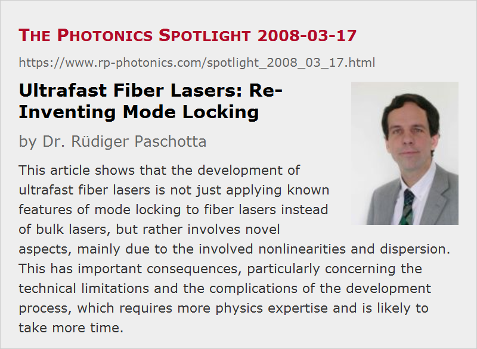

Ultrafast Fiber Lasers: Re-Inventing Mode Locking
Posted on 2008-03-17 as a part of the Photonics Spotlight (available as e-mail newsletter!)
Permanent link: https://www.rp-photonics.com/spotlight_2008_03_17.html
Author: Dr. Rüdiger Paschotta, RP Photonics Consulting GmbH
Abstract: This article shows that the development of ultrafast fiber lasers is not just applying known features of mode locking to fiber lasers instead of bulk lasers, but rather involves novel aspects, mainly due to the involved nonlinearities and dispersion. This has important consequences, particularly concerning the technical limitations and the complications of the development process, which requires more physics expertise and is likely to take more time.

Ref.: encyclopedia articles on mode-locked fiber lasers, mode-locked lasers
The future of fiber lasers and competing technologies is currently the subject of an intense debate. The general topic is enormously complex, but we can pick one sub-topic at a time, such as ultrafast fiber lasers. Many are impressed by the prospects of replacing more or less sensitive bulk setups with compact fiber-based laser setups, which don't require one to maintain any alignment, can be bent and folded as it is convenient, and are immune to thermal effects at high power levels. Particularly in the domain of ultrafast lasers, rare-earth doped fibers offer the additional feature of a substantial gain bandwidth, which is compatible with very short pulse durations. Yes, I wrote compatible with short pulse durations, not enabling short pulse durations, because those are often prevented by other issues. The same applies to high pulse energies.
Just the Same, Now with Fibers?
One might expect that after the development of many different mode-locked lasers, the issues for developing mode-locked fiber lasers would just be the very fiber-specific ones: for example, how to get all the required components in fiber-optic form, and how to optimize the parameters under the given conditions, but not any fundamentals of mode locking. This expectation, however, would be quite wrong. In a sense, mode locking had to be re-invented for fiber lasers. The initial approach was to apply various techniques and ideas known from bulk lasers. However, it was then soon recognized that this implies serious restrictions on the key performance parameters, such as pulse duration and pulse energy, mostly due to the strong nonlinearities and partially the chromatic dispersion of fibers.
It became clear then that only with specially adapted techniques it is possible to reach e.g. pulse energies of multiple nanojoules in 100-fs pulses. So now we have not only soliton lasers, but also stretched-pulse lasers, similariton lasers and other all normal-dispersion fiber lasers – a family of laser devices with complicated properties and not always very well-defined boundaries between the different brands. What distinguishes all such fiber lasers from essentially all previous mode-locked lasers is that the Kerr nonlinearity and chromatic dispersion play very strong and mutually coupled roles, and that various pulse parameters (including the chirp of optical frequency) undergo a strong evolution during each resonator round trip.
Consequences
These are not just some subtle technical details, relevant only for those who are interested in a precise understanding of how such lasers work:
- Ultrafast fiber lasers are still subject to certain performance limitations, and this is unlikely to change in the foreseeable future. After all, nonlinearities and dispersion cannot simply be eliminated. Measures such as using large mode area fibers for reducing nonlinear effects do have serious limitations, such as limited availability of fiber couplers, modulators, etc.
- Particularly (but not only) for realizing performance parameters near the limits, a precise physical understanding is vital. By trying such a development without that, one can easily get into a nightmare which won't end on the next morning. (See also The Photonics Spotlight 2008-03-17.)
- Certain mode-locking techniques for fiber lasers make it difficult to obtain an all-fiber setup. In a way, this can lead to devices which combine the bad features of both domains: an alignment sensitivity worse than that of a regular bulk laser (due to air spaces and the requirement to re-launch light into a single-mode fiber), the pulse energy limitation of a fiber laser, and possibly a poor pulse quality and the need for external dispersive pulse compression.
- Only to a very limited extent, one can use the kind of design guidelines which are very helpful for developing mode-locked bulk lasers. Numerical laser models are often required for understanding the overall operation principle, the dependence of performance parameters on device parameters, and the limitations of the chosen approach.
The latter remark is particularly important: while many nice features can be obtained in different fiber lasers, it is very challenging to combine in a single device the advantages of an all-fiber setup, a relatively high pulse energy, a high pulse energy, a robust and compact setup, and cheap components. So it may often be wise to consider whether a bulk laser wouldn't be the better solution overall. For sure, the comparatively simpler physics of mode locking such lasers are likely to result in a faster and cheaper development, which is particularly important for small quantities. On the other hand, not every application needs all the nice features mentioned above, and particularly for larger volumes it may then be advantageous to go for a fiber laser. However, my warning is: Never do it without having extensive expertise available for such a project.
This article is a posting of the Photonics Spotlight, authored by Dr. Rüdiger Paschotta. You may link to this page and cite it, because its location is permanent. See also the RP Photonics Encyclopedia.
Note that you can also receive the articles in the form of a newsletter or with an RSS feed.
Questions and Comments from Users
Here you can submit questions and comments. As far as they get accepted by the author, they will appear above this paragraph together with the author’s answer. The author will decide on acceptance based on certain criteria. Essentially, the issue must be of sufficiently broad interest.
Please do not enter personal data here; we would otherwise delete it soon. (See also our privacy declaration.) If you wish to receive personal feedback or consultancy from the author, please contact him e.g. via e-mail.
By submitting the information, you give your consent to the potential publication of your inputs on our website according to our rules. (If you later retract your consent, we will delete those inputs.) As your inputs are first reviewed by the author, they may be published with some delay.
|  |
If you like this page, please share the link with your friends and colleagues, e.g. via social media:
These sharing buttons are implemented in a privacy-friendly way!